Avant et après
Les images du jeu de 2010, à gauche, et leur remaster pour le nouveau HainyaH, à droite : 119 paires. Les originaux sont agrandis sans lissage, pour qu’on voie leurs pixels tels qu’ils étaient.
Les races 16

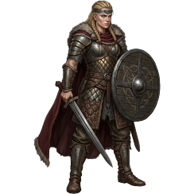

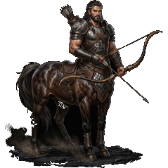

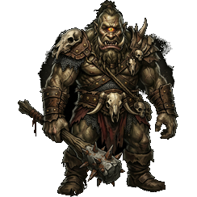

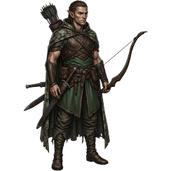
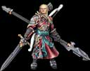
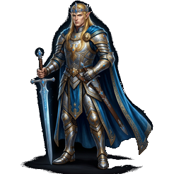
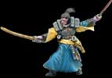
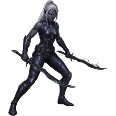

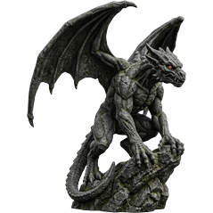
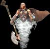
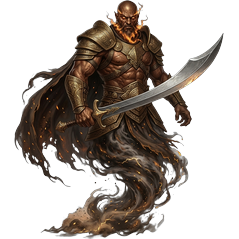

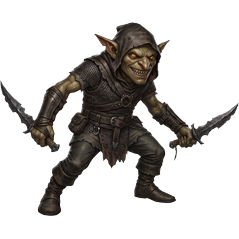

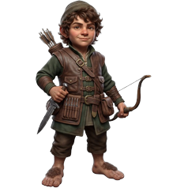

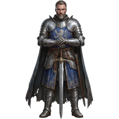
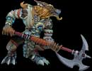
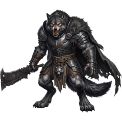

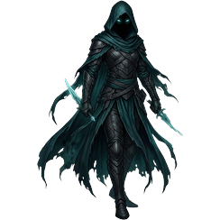
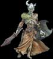
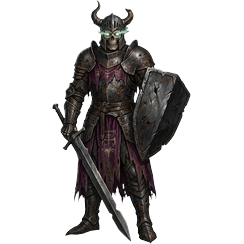
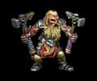
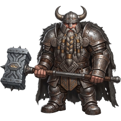

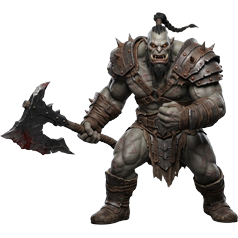
Les bâtiments 15
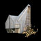
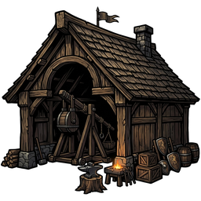

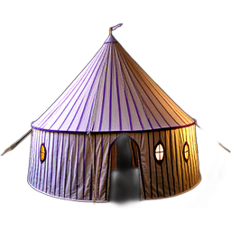


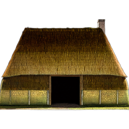
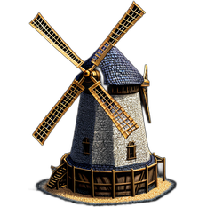
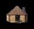
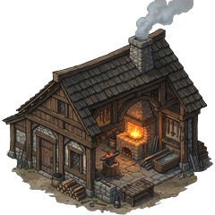

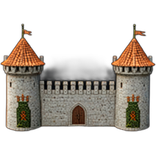

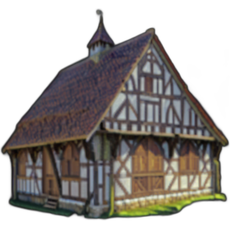

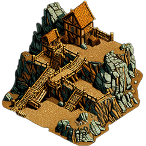
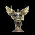
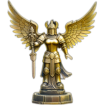
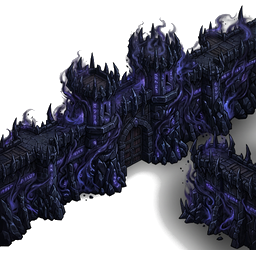

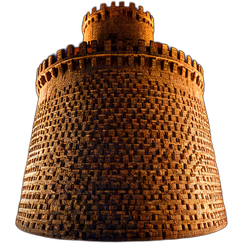

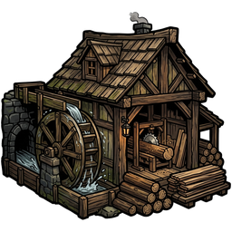
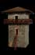
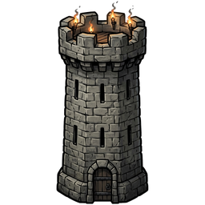
Les unités 5

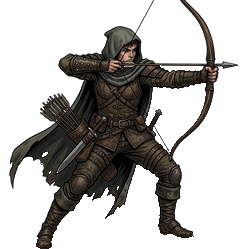

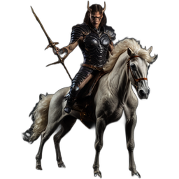

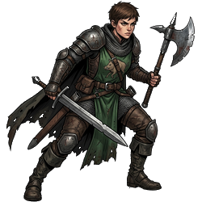

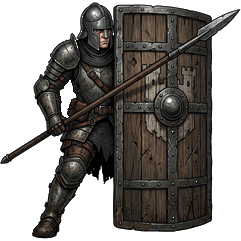

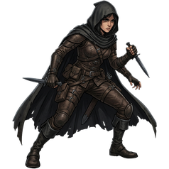
Les cercles de magie 8

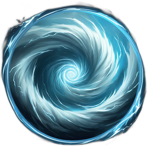


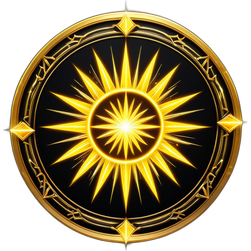

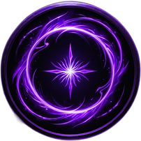

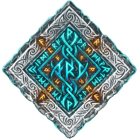

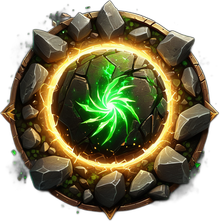

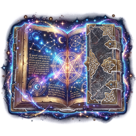
La magie 7


Les sciences 10


Les guildes 2
La noblesse 21


Les nouvelles 16


Les icônes 11


Les ressources 5


Le combat 2


Le royaume 1

Remasters tirés de allardy/hainyah, packages/web/public/modern (commit 520898b5f). Ne figurent pas ici les images créées sans original de 2010, ni celles que le nouveau jeu montre encore telles qu’en 2010.